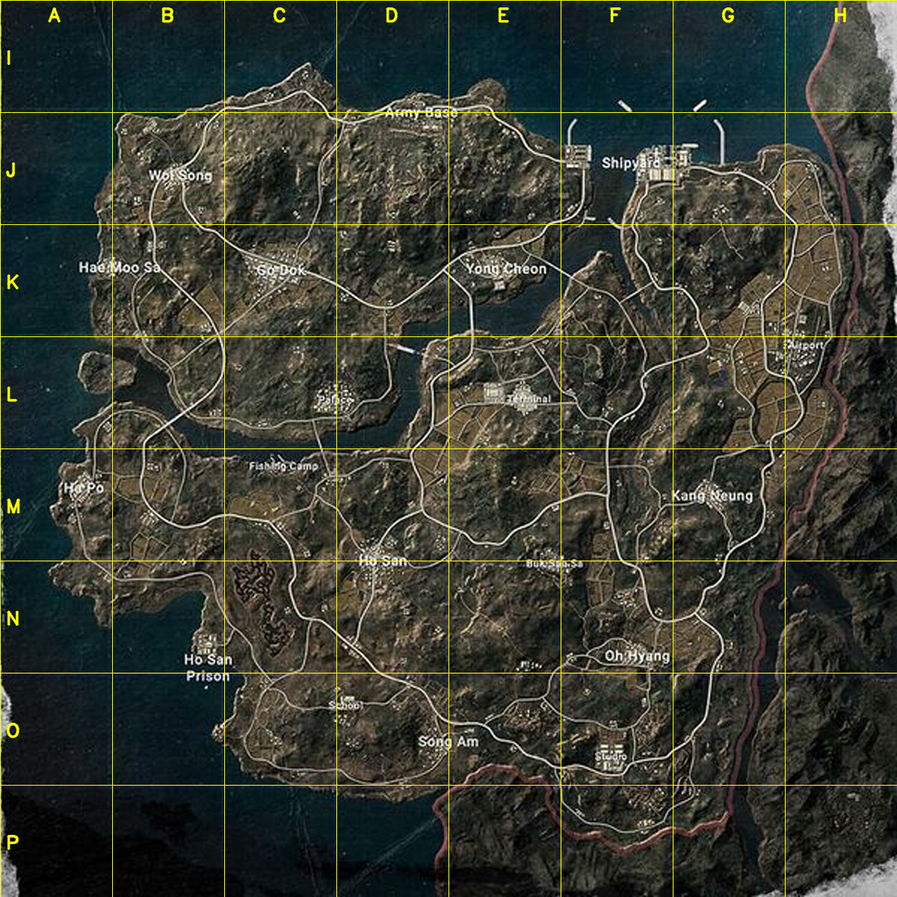
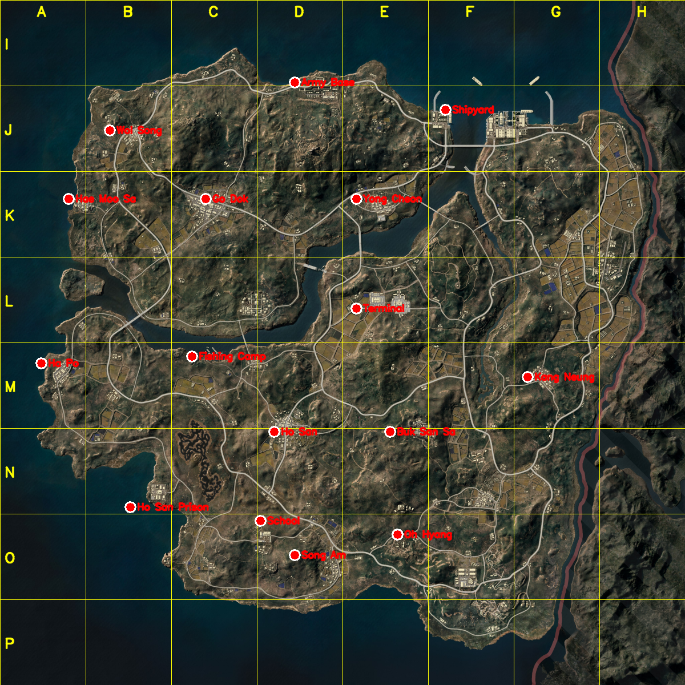

2026-05-25 · 에란겔과 동일한 A~H/I~P 격자 (8×8km, 각 칸 1km) · liquipedia↔taego.jpg 1592매칭으로 crop 동일 확인


| 지명 | 격자칸 | gx | gy |
|---|---|---|---|
| Army Base | D–I | 0.43 | 0.12 |
| Shipyard | F–J | 0.65 | 0.16 |
| Wol Song | B–J | 0.16 | 0.19 |
| Hae Moo Sa | A–K | 0.10 | 0.29 |
| Go Dok | C–K | 0.30 | 0.29 |
| Yong Cheon | E–K | 0.52 | 0.29 |
| Terminal | E–L | 0.52 | 0.45 |
| Ha Po | A–M | 0.06 | 0.53 |
| Fishing Camp | C–M | 0.28 | 0.52 |
| Kang Neung | G–M | 0.77 | 0.55 |
| Ho San | D–N | 0.40 | 0.63 |
| Buk San Sa | E–N | 0.57 | 0.63 |
| Ho San Prison | B–N | 0.19 | 0.74 |
| Song Am | D–O | 0.43 | 0.81 |
| Oh Hyang | E–O | 0.58 | 0.78 |
| School | D–O | 0.38 | 0.76 |
liquipedia 목록엔 Airport · Studio · Palace도 있는데 아직 위치를 못 잡았어. 특히 오른쪽 격자지대(G/H–K/L)의 큰 도시 이름이 뭔지(Airport?) 알려주면 추가할게. 그리고 칸이 어긋난 지명이 있으면 "어느 지명 → 어느 칸" 형태로 알려줘 (예: "Terminal은 E–L 아니라 D–L").